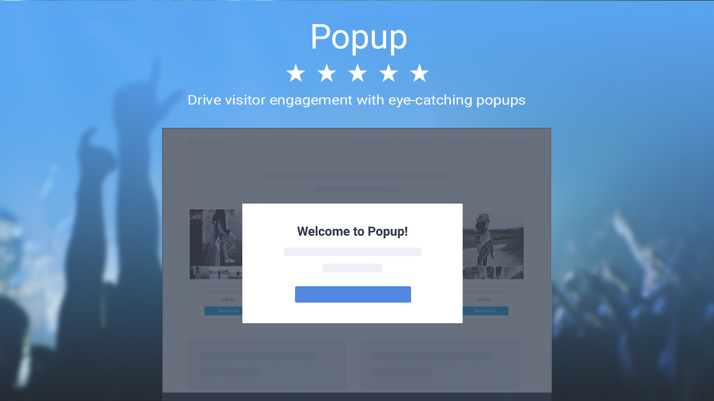
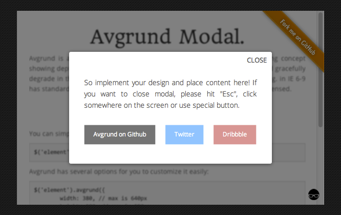

팝업, 레이어팝업, 모달, 토스트(알림)등 시간이 지남에 기능이 다르게 변화됨에 따라 다양한 이름이 만들어짐
팝업 윈도우?
특정 웹사이트가 어떠한 내용을 표시하기 위해 갑자기 생성되는 새 창을 말한다. 보통 자바스크립트가 이러한 창을 만들어 내지만, 다른 요인에 의해서 생성되기도 한다. 팝업창의 크기는 자바스크립트 등에서 주어진 값에 따라 달라진다. 팝업창은 주로 웹사이트의 트래픽을 증가시키거나 이메일 주소를 수집하기 위한 온라인 광고의 일종으로 사용되고 있다. 팝업창을 이용한 광고를 팝업창 광고 또는 팝업 광고라고 부른다. 팝업창을 이용한 광고는 웹사이트를 열 때뿐만
아니라 다른 웹사이트로 이동할 때, 웹 브라우저를 종료할 때 표시되기도 하며, 활성화된 창 뒤에서 팝업창이 숨어 있기도 한다. 이러한 것들은 작업 표시줄을 보거나 활성화된 창을 닫아야만 확인할 수 있기 때문에 어느 웹사이트에서 이런 창을 열었는지 사용자가 확인하기 어렵도록 한다.

레이어 팝업?
DIV 태그를 이용한 방법으로 사용자가 팝업 수행을 요청하면 DIV 영역을 제외한 부분의 명암이 어두워지면서 팝업이 띄워지는 형태를 말합니다. 대표적으로 아마존닷컴 같은 쇼핑사이트에서 이미지를 표시할 때 많이 사용됩니다.

모달창
모들 윈도(Modal Window)는 사용자 인터페이스 디자인 개념에서 자식 윈도에서 부모 윈도로 돌아가기 전에 사용자의 상호동작을 요구하는 창을 말한다.
Q : 토스트 팝업
A : Android 및 iOS와 같은 모바일 OS 개발자 는 사용자에게 알림을 제공 하고 싶었 습니다 . 화면 아래쪽에서 튀어나온 것은 토스터가 준비되면 토스터에서 토스트가 튀는 것과 매우 유사하여 토스트라고 합니다.
팝업 알림, 토스트, 수동 팝업, 스낵바, 바탕 화면 알림, 알림 풍선 또는 단순히 알림이라는 용어는 모두 사용자가 이 알림에 즉시 반응하도록 강요하지 않고 특정 이벤트를 전달하는 그래픽 제어 요소를 나타냅니다.